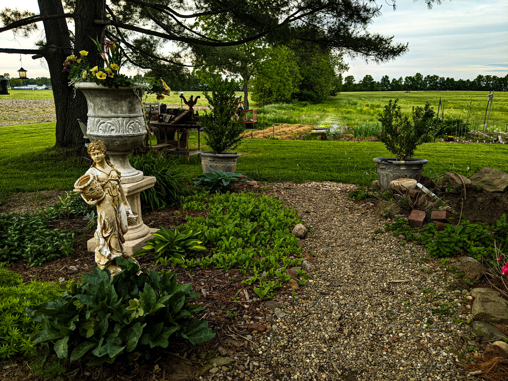

How-To Guides
Follow my simple step-by-step guides for projects such as creating garden beds, installing paths, and planning outdoor spaces.
Explore How-To GuidesBeautiful landscapes you can create yourself.
Garden & Ground helps homeowners plan, design, and build beautiful outdoor spaces themselves. Whether you are planting a garden bed, laying a walkway, or completely rethinking your backyard, good design does not have to require an enormous budget.

You do not need to be a professional landscape designer to create an outdoor space that looks intentional. Learning a few basic design principles can help you avoid expensive mistakes and make confident decisions about plants, materials, and layout.
Follow my simple step-by-step guides for projects such as creating garden beds, installing paths, and planning outdoor spaces.
Explore How-To GuidesLearn practical ways to save money, select plants, improve curb appeal, and make your DIY projects easier.
Read Tips & TricksExplore garden styles, plant combinations, hardscape ideas, and beautiful outdoor spaces to inspire your own landscape.
Find Inspiration